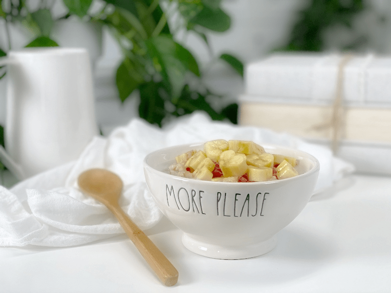
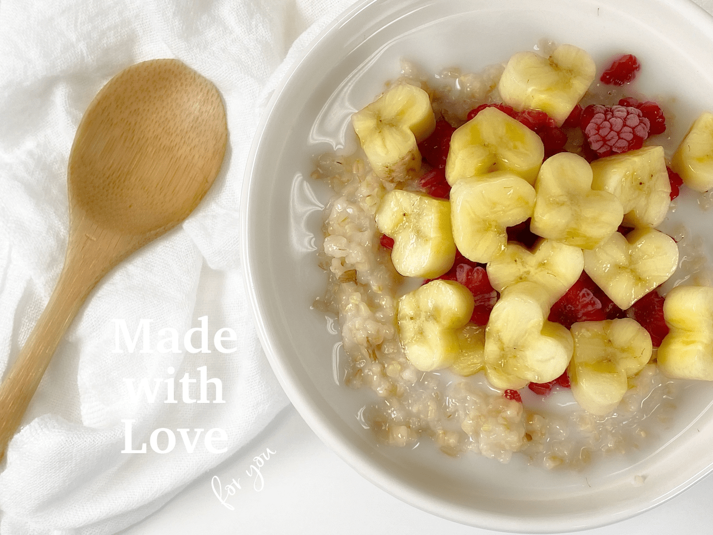
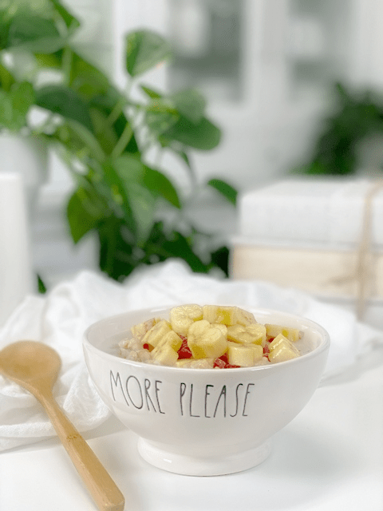
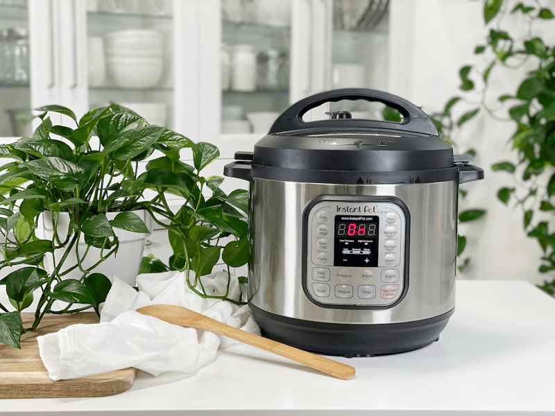
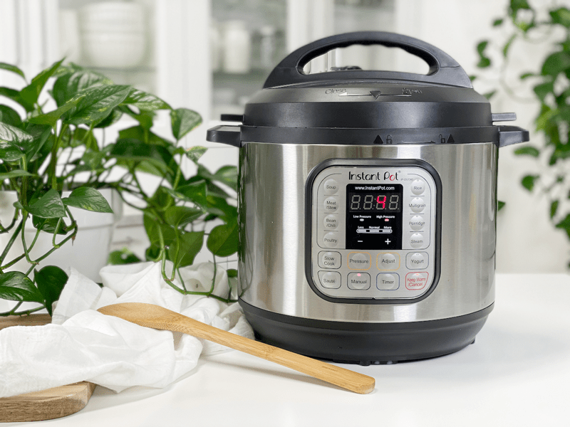
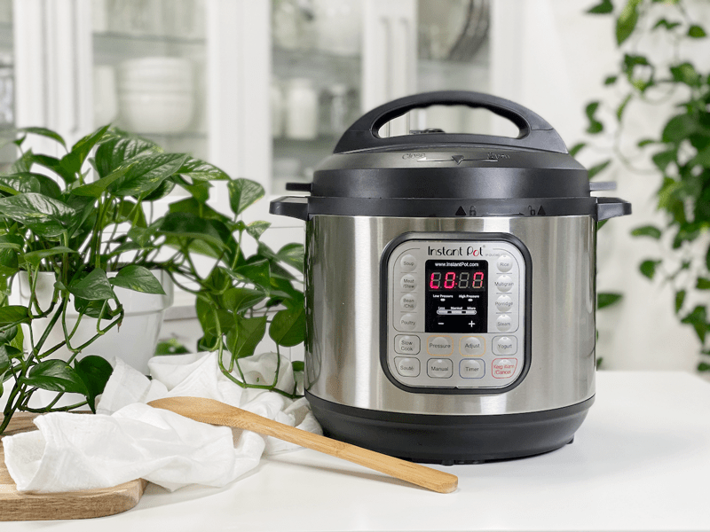
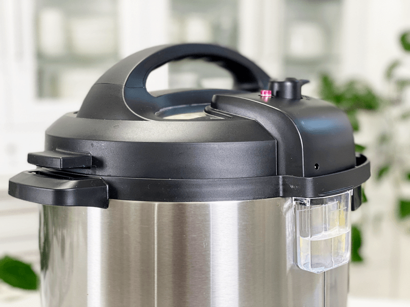
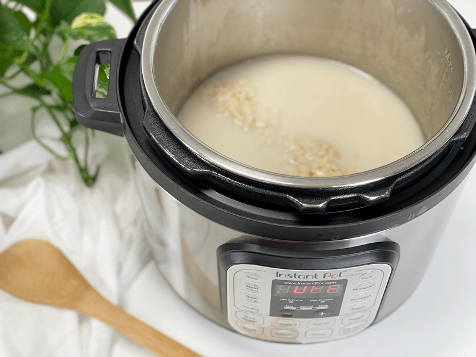
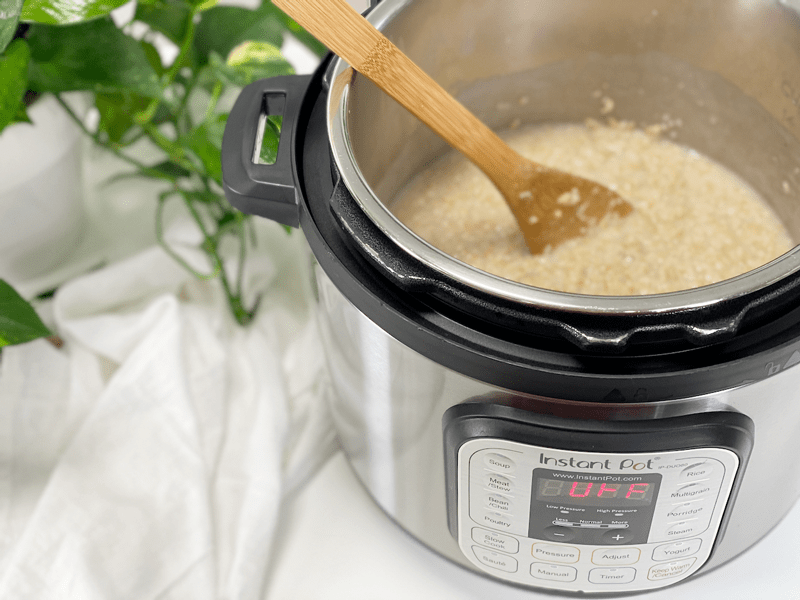
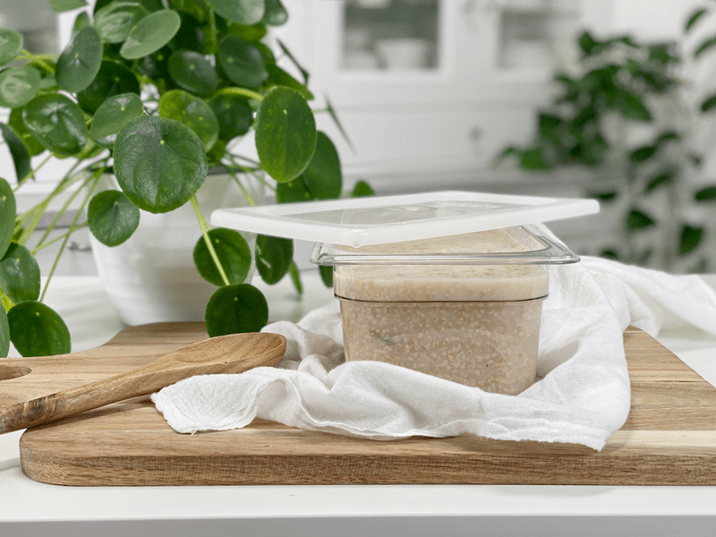

Steel Cut Oats | Instant Pot| Batch Cooking
If you love a bowl of healthy steel-cut oatmeal in the morning and you also love to save time in the kitchen, today’s post is for you. Batch cooking is one of my little lifesavers, and I will be honest, the Instant Pot has really upped my game. Do you have ever have those aha moments when you wonder where your brain has been most of your life? Well, I did just the other day. Steel-cut oats are something I enjoy but tend to forget about because they take so long to cook.

I LOVE breakfast, and frankly, my mornings are not rushed, so I have all the time I need to wait for oats to cook…but I don’t wanna. I want to wake up, eat, and start my day! That’s when I got the idea to batch cook my steel-cut oats in the Instant Pot.
Why I Use an Instant Pot
- Completely hands-off. No standing at the stove to monitor the pot.
- No more staring at the pot to wait for it to boil.
- No spilling over the edge of the pot if you walk away for 3 seconds!
- It keeps the oats warm after they are cooked.
- With the right oat to water ratio, the results are totally worth it and completely foolproof!
- Breakfast Meal Batch Prep –you can make the oats ahead of time and refrigerate them for up to a week. It takes all of 30 minutes to do it (5 minutes of effort from me and 25 minutes of effort from the machine). Just put the ingredients into the pot, attach the lid, push a few buttons, and off I go to do some random chore while they cook.

Why I LOVE Steel-Cut Oats
Steel-cut oats are chewier and coarser in texture than rolled oats, because they are less processed. They are an excellent soluble fiber to add to your diet that also acts as a prebiotic food, which is a special type of fiber that supports digestive health. These oats promote anti-inflammatory integrity in the intestinal bacteria. Steel-cut oats are less processed than old-fashioned rolled oats and have a lower glycemic Index.
Although oats do not contain gluten, they are generally grown alongside gluten grains such as wheat and barley, which is why many people with gluten intolerance cannot eat them. However, pure, uncontaminated, certified gluten-free oats (which can be ordered online or sometimes found in health food stores) can usually be tolerated by those with celiac disease.
Why I Add Kombu Seaweed and What It Is
Kombu is a type of sea kelp that is rich in vitamins and minerals, including potassium, calcium, and iodine. It is a great ingredient to keep stashed in your pantry. It has a very mild flavor and won’t affect the taste of the dish. Because it contains natural glutamic acid (the basis of MSG), it is a natural flavor enhancer. It adds umami to dishes, while also providing valuable minerals and nutrients to food it is cooked with.
It is high in vitamins A, C, E, B1, B2, B6, and B12. Seaweed also contains a substance (ergosterol) that converts to vitamin D in the body. In addition to essential nutrients, seaweeds provide us with carotene, chlorophyll, enzymes, and fiber. And while we are at it…it is high in iodine, which is essential for thyroid function!
As I mentioned before, it has a very mild flavor, not what you would expect from a seaweed. It has a saltiness that comes from a balanced, chelated combination of sodium, potassium, calcium, phosphorus, magnesium, iron, and myriad trace minerals found in the ocean. So next time you make a pot of oats, rice, vegetable broth, or beans, add a strip into the pot and reap the nutritional benefits of seaweed.

In the photo above, you can see the specks of the seaweed. I just stirred it in, no hint of sea flavors, just delicious and nutritious!
Basic Recipe – More Options Below
This “recipe” is going to be very basic, and there’s a good reason for that. The different ingredients that one could add to this are endless, but when you are batch cooking, having a neutral base will allow you to change up your oats throughout the week. Also, oats can be used in sweet and savory applications. So, make a large batch and find your daily creativity!
Instant Pot Tips and Serving Sizes
- General measure: 1 cup of uncooked oats will make about 3 cups of cooked oatmeal.
- The amount you can make at one time will depend on the size of your Instant Pot. A good rule of thumb is never to fill it past the middle of the pot. Oats foam while they cook, so we need to leave room for that.
- You can grease the inside of the pot with coconut oil to help with clean-up, but I find that it turns out just fine without it.
Today’s Texture
Using the measurements and cooking times listed below, the texture of this oatmeal is VERY loose and creamy, with a bit of chew from the oat kernel. If you prefer thicker steel-cut oatmeal, reduce the water to 6 cups rather than 8 cups.

Ingredients
Use only with 8-quart pot – yields 8 1/4 cups cooked
- 2 2/3 cups (480 g) steel-cut oats, soaked
- 8 cups (2 liters) water
- 4-6″ strip Kombu seaweed
Preparation
- Optional step–soak the steel cut oats overnight. By soaking the grains in an acidic medium (lemon juice or apple cider vinegar), you break down the anti-nutrients in the oats, and the minerals are released, making the oats more digestible. Read how (here).
-
Combine the steel-cut oats, water, and kombu seaweed in the bowl of an 8-quart Instant Pot and stir them. Secure the lid and turn the steam release valve at the top to “Sealing.”
- Salt is optional. Often I leave it out and salt my dished-up bowl.
-
Press the “Manual” or “Pressure Cook” button and set the cooking time to 4 minutes on high pressure.
-
The Instant Pot will read “ON” as it comes to pressure, which can take 10 to 15 minutes. When the floating valve in the lid pops up, you’ll know the pot is pressurized, and the countdown will begin.
-
Allow for a complete natural pressure release, as this is where the oats will do most of their softening, so don’t rush this step.
-
When you are ready to open the cover, turn the steam release valve to the venting position just to make sure that all of the pressure and steam have escaped.
Food Storage
When it comes to storing hot foods, we have a 2-hour window. You don’t want to put piping hot foods directly into the refrigerator. However, If you leave food out to cool and forget about it you should, after 2 hours, throw it away to prevent the growth of bacteria. (source) Large amounts should be divided into smaller portions and put in shallow covered containers for quicker cooling in a refrigerator that is set to 40 degrees (F) or below.
- Fridge–In a sealed container, it will keep for up to 7 days.
- Freezer–You can also freeze the oatmeal in individual reheating portions for up to 3 months. When pulling from the freezer, let it thaw in the fridge overnight.
- The oats will become thicker after cooling down, to the point that you could use a butter knife to cut out your serving. To thin it down a little a bit, add a splash or two or three of plant milk, stirring it well to create a pleasant and creamy porridge—or don’t! You make the call on what texture you want. You are in the captain’s seat on this one.
Reheat Cooked Steel-Cut Oats:
Stove Top in Saucepan:
- Place a large portion of cooked oats into a small saucepan and add a few tablespoons of water or plant-based milk.
- Cover and warm over medium-low heat, frequently stirring until warmed through (roughly 5 minutes).
- Add more water or milk, if necessary, to prevent the oatmeal from drying out or to reach the texture you prefer.
Oatmeal Toppings & Tips
Tips First
- Vanilla–always add after the cooking is done.
- Fruit–best to add after the oats have cooked, so they it doesn’t turn to mush.
- If you use NuNatural liquid stevia, add it when dishing up your bowl.
- Add a dash of salt to bring out the natural sweetness of the oatmeal.
Oatmeal Topping Ideas (per serving)
- Almond Joy: Add a splash of coconut milk, top with raw chocolate chips, shredded coconut, and chopped almonds.
- Apple Pie: Top with chopped fresh diced apple, cinnamon, and honey or sweetener of choice.
- Berries and Cream: Stir in 1/4 cup fresh berries, 1/2 teaspoon vanilla, and 1/4 cup raw yogurt.
- Chocolate Peanut Butter: 1 tablespoon cocoa powder and peanut butter, mixing it along with 1/2 tablespoon maple syrup.
- Honey Nut n’ Oats: Stir in 1 tablespoon honey and top with pecans or walnuts.
- Pumpkin Pie: Combine 3 tablespoons pumpkin purée, 1 tablespoon raisins, 1/2 tablespoon maple syrup, 1/2 teaspoon each of cinnamon, nutmeg, and 1/4 teaspoon ground ginger.
- Tropical Dance: Stir in 1 tablespoon coconut butter, chopped pineapple, sliced banana, and a splash of coconut milk.
- Vanilla Maple: 1/2 teaspoon vanilla extract and 1/2 tablespoon maple syrup
- What’s your favorite?! Share below in the comments.
-

-
Add ingredients to the Instant Pot “bowl.”
-

-
Select “Manual” | High Pressure | Set timer to 4 minutes | That’s it!
-

-
Once the Instant Pot is to pressure it will count down the minutes.
-

-
For some reason, my camera wouldn’t fully pick up the digital numbers. Once the screen reads “L0:00” stop it once it reaches 10 minutes.
-

-
Don’t forget to check this liquid overflow catcher every time you use the machine. Oatmeal froths a lot while cooking and the liquid that tries to bubble over is caught here.
-

-
As you can see there’s a lot of water standing in the pot after it’s done cooking.
-

-
Just give it a quick stir!
-

-
Once cooled, store in the fridge or freezer.
© AmieSue.com